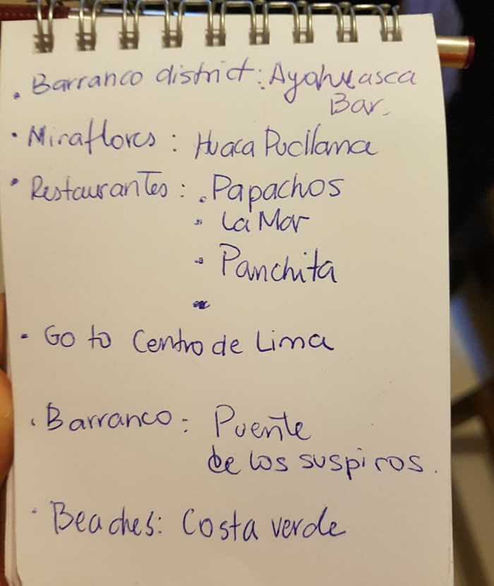

South America · Peru · Lima
Lima, September 2017
Before the flight: the bag
I travelled for about six months with one backpack, a Camp Out pack that has been with me on every trip I have taken. Full, it weighed around 11 kg. I do not know its volume in litres.

I pack minimally, mostly clothes. If something is missing, you can almost always buy it when you arrive, so I would rather carry less. What to leave at home and what to add is personal, so I will not give you a list that pretends to fit everyone.
Tuesday, September 19: landing in Lima
The trip began here. I landed on 19 September 2017 and took a taxi straight to Hostel Rivendell, where I stayed. I came back to Lima more than once during the six months, so this page covers the first arrival and the things I did on it.
The hostel gave me a printed "What to do in Lima?" handout, in Hebrew, and I used it alongside a handwritten list from a local woman (below).
Tuesday evening: a stadium concert
The same evening I took a taxi to a stadium concert. The fare was cheap, though I do not remember the amount. The opening act was Incubus, followed by Maroon 5. I love both bands, and I would not change a thing about that night.
Filmed from the stands on a phone, so the picture is shaky and the sound is loud. Times come from the files' timestamps, and Google Photos places all of it in Lima on 19 September.
Recommendations I received, places I did not visit
On the flight in, I met a Peruvian woman at my connection in Madrid, and she wrote me a short list for Lima. I did not visit these places on this trip. They are her recommendations, not my reviews. Anything marked "checked" I verified from a public source in November 2026.

- Barranco district: a bar called Ayahuasca Bar. I did not verify it.
- Barranco district: the Bridge of Sighs (Puente de los Suspiros). Checked: a wooden pedestrian bridge in Barranco, inaugurated on 14 February 1876, destroyed in 1881 during the War of the Pacific, and reopened in 2014. Tradition says it was a meeting place for couples (Wikipedia).
- Miraflores: Huaca Pucllana. Checked: an adobe ceremonial site in Miraflores built roughly 400 to 700 AD. According to Andina (November 2024), the site museum is open Wednesday to Monday, 9:00 to 17:00, general entry S/ 15, and there are night visits Wednesday to Sunday, 18:45 to 21:00, by reservation, at S/ 17 (Andina). Confirm before you go, since prices change.
- Restaurants: Papachos, La Mar and Panchita. I did not verify their current status, so check opening hours and booking before you plan around them.
- Centro de Lima: her note simply says to go to the historic centre.
- Beaches: Costa Verde, the coastal strip below the Miraflores and Barranco cliffs.
What the hostel handout suggested (2017)
Everything in this section is paraphrased from the handout I was given in September 2017. I did not do these things on this arrival, and prices and times from 2017 may have changed.
- Magic Water Circuit, Parque de la Reserva. A light and water show. In 2017 the handout listed Tuesday to Sunday shows at 19:15, 20:15 and 21:30, entry 4 soles, and a taxi from the hostel at 10 to 15 soles. Checked: an April 2026 guide lists Tuesday to Sunday, shows around 19:15, 20:15 and 21:10, about 4 to 5 soles (Tierra de los Andes). Showtimes differ a little from the 2017 handout, so confirm them locally.
- Walking tour of the centre. A free, tip-based tour run by students, leaving daily at 11:00 from Parque Kennedy. The handout also described getting there by the Metropolitano bus (2.5 soles by card) and a taxi to Plaza de Armas at 15 to 20 soles.
- Barranco walking tour. Also tip-based, daily at 16:00 from the Starbucks at the plaza, with a taxi from the hostel at about 8 soles.
The Magic Water Circuit is also a good one to compare with the Magic Fountain of Montjuïc in my Barcelona guide.